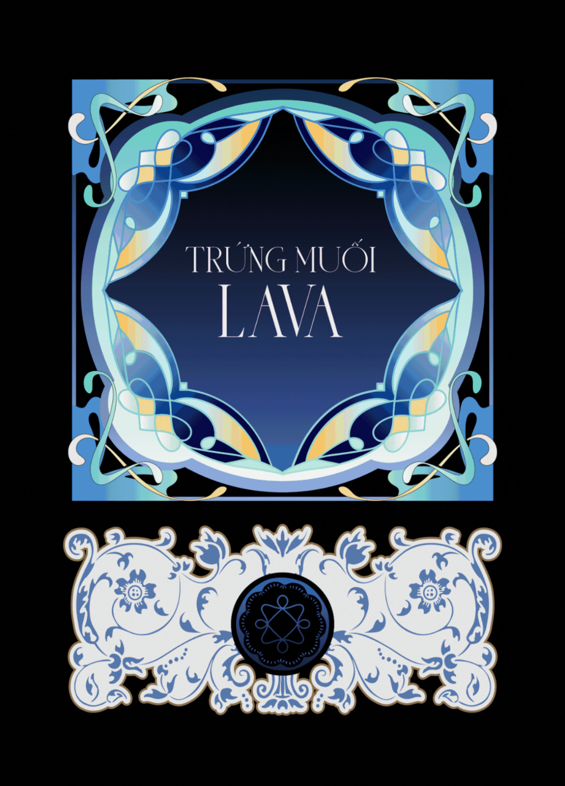

Made of
many things.
360° Designer
Call it UX, call it art direction, call it creative chaos — I just call it making things that people remember.
Explore the story
- Motion Design
- Branding
- Visual Design
- User Interface Design
- Product Design
- Art Direction
- User Research
- Pitch Deck Design
- Graphic Design
Things I Make When No One’s Asking
Some days I’m designing an user flow, other days I’m directing a cat in a mooncake photoshoot. I design products, brands, and visuals with equal obsession.
Across disciplines
Transforming designs into fully responsive, interactive websites with Framer. Whether it’s a landing page or a full-scale web experience, I build fast, modern sites optimized for seamless performance
A strong brand is more than just a logo—it’s the foundation of how your audience perceives you. I create cohesive and impactful brand identities that ensure consistency and recognition across all touchpoints
Designing user-centered experiences that are both functional and visually engaging. From concept to final prototype, I focus on intuitive interfaces that drive engagement and enhance usability